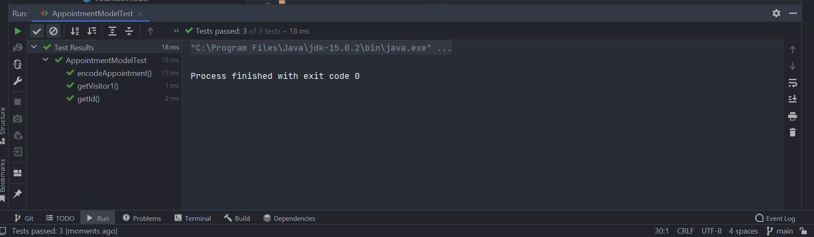
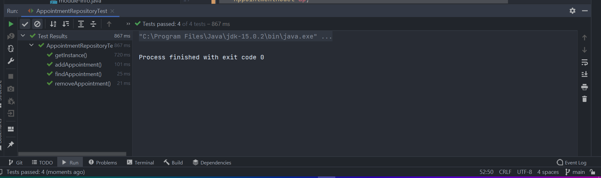
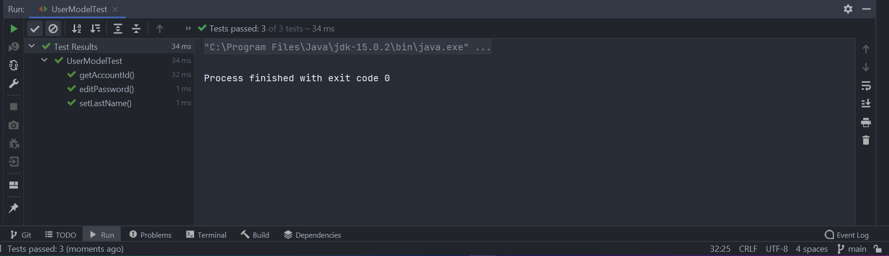
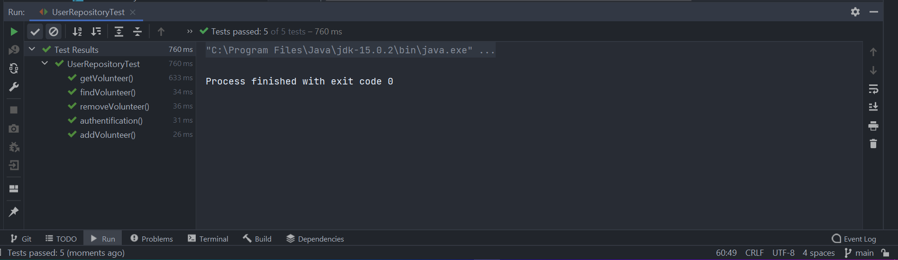
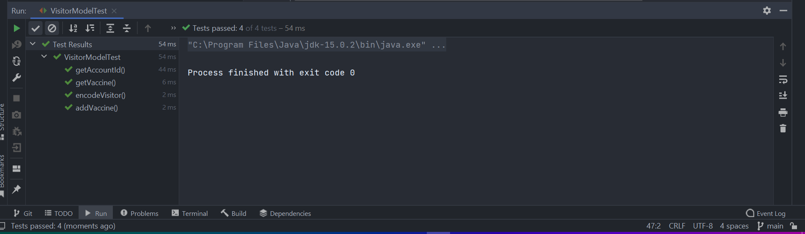
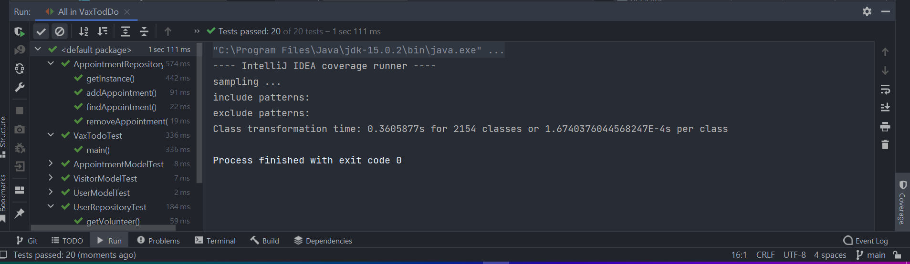

Cadre du projet
Compréhension du domaine
Conception
Premièrement, le nombre de controller a changer pour s'accorder avec le nombre de vue que l'on devait implémenter avec Java Swing. Comme on voulait garder un rapport de 1 controlleur pour 1 vue, on a donc en créer de nouveau par rapport au diagramme de classe du précédent devoir.
Sur le point de la décomposition du système, on a trouvé judicieux de le décomposer de manière fonctionnelle. Et une architecture qui nous permettait cela est le MVC et le client-serveur. Il nous permet de décomposer d'une part l'interface graphique (vue), les données (modèle) et les unités de calculs (controlleur)
Une différence majeur entre notre diagramme de classe du dm2 et celui du dm3 est la disparition de la classe abstraite Controller et l'apparition de SystemController. Cette décision a été prise lorsqu'il a fallut implémenter les vues en utilisant Java Swing. En fait dans Java Swing, l'erreur qui a été faite est que l'on a créer une fenêtre pour chaque vue. Ce qui veut dire qu'au lieu de modifier un Panel et de conserver le même Frame, on configure dynamiquement la visibilité d'un Frame pour en appeler un autre. Cela signifie que l'on a une vue pour chaque fenêtre et donc une classe pour chaque vue. Donc pour récupérer les informations contenues dans les champs de texte de type TextField, il a fallu avoir des controlleurs spécialisés pour chaque vu (comme précédemment expliqué). De ce fait, les informations des champs de texte n'ont plus besoin de parse car elles sont directement envoyé dans le controlleurs relatifs à la vue. Ce qui a été fastidieux car on a un nombre très élevés de controlleurs (17). Cela créer des classes qui sont très spécialisées et augmente le niveau de couplage du programme car par exemple comme les controlleurs sont relatif à la vue, alors le controlleur AddUserController est très dépendant du controlleur UserController qui lui gère seulement le menu des utilisateurs. Un point positif ce cette conception se retrouve au niveau de l'implémentation est qu'il est plus aisé d'instancier, récupérer et analyser les ActionListeners des action possibles dans les menus à travers les boutons. Cela nous a permis d'y voir plus clair dans le code lorsqu'il a fallu l'implémenter.
Pour augmenter la cohésion, cependant, nous avons tenu à centraliser le plus possible les calculs dans les controlleurs même. Ce qui signifie qu'ils doivent garder en leur sein les attributs relatifs aux calculs ou tâches qui leur seront dédier même si elles restent très spécialisées. Cela contribue aussi à rendre indépendant les controlleurs le plus possible.
Si cela était à refaire, on implémenterait la vue en dernier et nom pas en premier. Car cela à modifier notre conception.
Analyse
Implémentation
Le programme Java a été concu en utilisant Maven qui organise et architecture le projet de l'application VaxToDo. Il a fallut créer les dépendances dans le fichier pom.xml. On voulait utiliser Maven car il propose d'effectuer les tests et le déploiement de manière automatique mais finalement on a compris que le but du devoir était de fournir une commande manuelle pour faire rouler Apache Ant, donc on a quand même garder Maven sans utiliser toutes ses fonctionnalités.
En ce documentant à propos de Maven et de sa manière d'organiser le projet, on a comprit que les fichiers qui ne sont pas directement du code mais considéré comme des ressources devaient se trouver dans un fichier autre que le fichier main/java mais dans le fichier main.resource. Il était donc possible de créer un fichier texte de là et de le récupérer avec la commande suivante :
InputStream is = getClass().getClassLoader().getResourceAsStream("resource/appointment.txt");
Avec cette commande nous étions capable de récupérer les données préalablement formattées des utilisateurs ou des visiteurs et d'initialiser le programme en fonction. Malheureusement, nous n'étions plus capable de mettre à jours ce même fichier lorsqu'on voulait créer de nouveau rendez-vous, par exemple. On a donc été contraint de créer un fichier resource dans main/java/ et de lire et écrire dans le fichier en utilisant un chemin relatif. Une explication à cela viendra que les programmes JAR ne sont qu'en READ-ONLY et que les fichiers qui sont dans main/resource sont en réalité compilé avec le code et que l'on ne peut plus les modifier de là. Il faut donc s'imaginer que les fichiers textes sont en réalité des fichiers qui sont contenue dans un serveur exterieur au programme.
Le programme comme il est codé écrit de manière persistante dans les fichiers de données décrit précédemment. Pour cela, il ne refraichit pas ses strucutres de données à chaque fois que l'utilisateur fait une action mais seulement lorsque l'utilisateur exécute une requête nécessitant que les données du programme soit à jours. Par exemple, si un bénévole ou un employé qui n'est pas connecté sur le même ordinateur que moi créer un visiteur le serveur va être à jour automatiquement mais pas mon programme. Mon programme va se mettre à jours si par exemple, je demande à consulter la liste des visiteurs. Quand je vais me rendre dans le menu de consultation des visiteurs, à ce moment là, le programme va vérifier ses données pour afficher des données à jours. La mise à jours est effectué lorsque l'utilisateur se déplace dans le menu, c'est à dire qu'elle est dans l'ActionListener du bouton de déplacement.
De plus, grâce à Intellij IDEA, on a aussi pu créer des vues personnalisées que l'on pouvait créer depuis des fichiers .form qui sont en réalité des fichiers xml. Cette méthode facilite la création de vues et c'est ce qui nous a motivé à designer des vues sombres donc plus agréable à utiliser.
En terme de sécurité, il faut réfléchir à comment le serveur va conserver les données et comment on va s'assurer que la communication avec le client et le serveur sera sécuritaire. Le but est de ne surtout pas permettre à des personnes non-autorisés d'accéder aux données du système. Une solution pourrait être de localisé VaxToDo par rapport au lieu de travail et de connecter les postes en filaire et de désactiver les connections sans fil tout en conservant le besoin de se connecter avec un identifiant et un mot de passe. Mais cela rend difficile la prise de rendez-vous par téléphone si il y a plus d'un centre de vaccination donc cette solution n'est pas envisageable à long terme car la personne qui prend les rendez-vous doit avoir pouvoir consulter tous les rendez-vous qui sont déjà reservé pour l'entiéreté du système.
En terme de performance, le principe même du système ne requiert pas beaucoup de calcul. Par définition, pour la partie interne, il ne s'agit que de collecter des informations, de les lister et de les extraires donc ces actions sont dépendante des implémentations des structures de données qui organisent ses fonctions. Pour la partie externe, les performances sont directement dépendante de l'architecture client-serveur et donc de la connection entre celui qui envoit les requètes et celui qui les reçoit. Ce qui veut dire qu'avec une bonne connection, et un bon disque dur, le système VaxToDo est relativement léger et peut être installer sur des ordinateurs peu couteux. Cependant, il serait tout de même intéressant de regarder l'ordre de grandeur des méthodes utilisées ou de "profiler" concrètement les ressources consommés sur un ordinateur témoin pour s'assurer de ces prédictions.
Tests
Les tests ont été créer à partir de Junit5. Comme on utilise Maven comme Buil Tools, les tests se trouvent dans src/test/java et non dans src/main/java. Dans les captures d'écran ci-dessous, on met en lumière les résultats des tests exécutés dans Intellij IDEA, un par un.
    Dans cette image, ci-dessous, on a exécuter les 20 tests qui constituent tous les tests globaux dans VaxToDo avec une option de couverture. Cette option, nous permets de voir exactement ce que couvre nos tests dans le programme et nous donne une indication en pourcentage de l'étendu de ce qui est testé. Ici on peut voir que toutes les méthodes (notemment les méthodes privées) ne sont pas toutes testée. Par exemple, nos classes ne couvrent que 26/45 des méthodes dans le package Repository. On peut grâce à Intellij mettre en surbrilance les méthodes concernées et ainsi préciser nos tests pour couvrir plus de méthodes testées.

On peut remarqué qu'on couvre une bonne partie des classes des controlleurs parce que la classe de test VaxToDoTest est une sorte de simulation d'action de l'utilisateur. On a une grosse fonction de tests qui instancie tous les controlleurs et itère dessus en ouvrant et fermant les fenètres par exemple. Ce qui permet de passer en revu les vues aussi.
